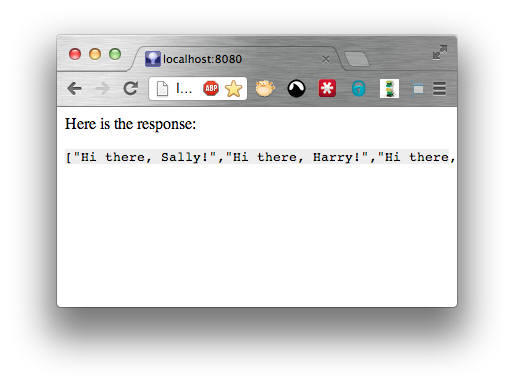

Before we begin, lets check you have the right versions of Java and Maven.
Make sure that Java is at least 1.5
$ java -version java version "1.7.0_07" Java(TM) SE Runtime Environment (build 1.7.0_07-b10) Java HotSpot(TM) 64-Bit Server VM (build 23.3-b01, mixed mode)
Maven sure that Maven is at least 3.0.4
$ mvn -version Apache Maven 3.0.4 (r1232337; 2012-01-17 08:44:56+0000) ...
The source code from this example is available on Github
Use your favourite editor to create a file called pom.xml in a new directory that will hold this project. The file should look like this:
<project xmlns="http://maven.apache.org/POM/4.0.0" xmlns:xsi="http://www.w3.org/2001/XMLSchema-instance"
xsi:schemaLocation="http://maven.apache.org/POM/4.0.0 http://maven.apache.org/xsd/maven-4.0.0.xsd">
<modelVersion>4.0.0</modelVersion>
<groupId>localhost</groupId>
<artifactId>quickstart-parent</artifactId>
<version>1.0-SNAPSHOT</version>
<packaging>pom</packaging>
<prerequisites>
<maven>3.0.4</maven>
</prerequisites>
<modules>
<module>server</module>
<module>client</module>
<module>webapp</module>
</modules>
<properties>
<project.reporting.outputEncoding>UTF-8</project.reporting.outputEncoding>
<project.build.outputEncoding>UTF-8</project.build.outputEncoding>
<project.build.sourceEncoding>UTF-8</project.build.sourceEncoding>
</properties>
<build>
<pluginManagement>
<plugins>
<plugin>
<artifactId>maven-compiler-plugin</artifactId>
<version>2.5.1</version>
</plugin>
<plugin>
<artifactId>maven-surefire-plugin</artifactId>
<version>2.12.4</version>
</plugin>
<plugin>
<artifactId>maven-war-plugin</artifactId>
<version>2.3</version>
</plugin>
</plugins>
</pluginManagement>
<plugins>
<plugin>
<groupId>org.jszip.maven</groupId>
<artifactId>jszip-maven-plugin</artifactId>
<version>0.1-alpha-5</version>
<extensions>true</extensions>
</plugin>
</plugins>
</build>
</project>
Make the directory structure for the server module. This module will hold the Java based server-side code.
$ mkdir -p server/src/{main,test}/{java,resources}
Create the server/pom.xml in your favourite editor. It should look like this:
<project xmlns="http://maven.apache.org/POM/4.0.0" xmlns:xsi="http://www.w3.org/2001/XMLSchema-instance"
xsi:schemaLocation="http://maven.apache.org/POM/4.0.0 http://maven.apache.org/xsd/maven-4.0.0.xsd">
<modelVersion>4.0.0</modelVersion>
<parent>
<groupId>localhost</groupId>
<artifactId>quickstart-parent</artifactId>
<version>1.0-SNAPSHOT</version>
</parent>
<artifactId>quickstart-server</artifactId>
<dependencies>
<!-- Using Servlet API, but provided by the container -->
<dependency>
<groupId>javax.servlet</groupId>
<artifactId>servlet-api</artifactId>
<version>2.5</version>
<scope>provided</scope>
</dependency>
<!-- Use SLF4J and Logback as the runtime implementation -->
<dependency>
<groupId>org.slf4j</groupId>
<artifactId>slf4j-api</artifactId>
<version>1.7.2</version>
</dependency>
<dependency>
<groupId>org.slf4j</groupId>
<artifactId>jcl-over-slf4j</artifactId>
<version>1.7.2</version>
</dependency>
<dependency>
<groupId>org.slf4j</groupId>
<artifactId>log4j-over-slf4j</artifactId>
<version>1.7.2</version>
</dependency>
<dependency>
<groupId>ch.qos.logback</groupId>
<artifactId>logback-classic</artifactId>
<version>1.0.7</version>
<scope>runtime</scope>
</dependency>
<!-- Use Jersey with Jackson for REST API -->
<dependency>
<groupId>com.sun.jersey</groupId>
<artifactId>jersey-core</artifactId>
<version>1.11</version>
</dependency>
<dependency>
<groupId>com.sun.jersey</groupId>
<artifactId>jersey-json</artifactId>
<version>1.11</version>
<exclusions>
<!-- exclude the old version of jackson at the old coordinates -->
<exclusion>
<groupId>org.codehaus.jackson</groupId>
<artifactId>jackson-core-asl</artifactId>
</exclusion>
<exclusion>
<groupId>org.codehaus.jackson</groupId>
<artifactId>jackson-mapper-asl</artifactId>
</exclusion>
<exclusion>
<groupId>org.codehaus.jackson</groupId>
<artifactId>jackson-jaxrs</artifactId>
</exclusion>
<exclusion>
<groupId>org.codehaus.jackson</groupId>
<artifactId>jackson-xc</artifactId>
</exclusion>
</exclusions>
</dependency>
<dependency>
<groupId>com.sun.jersey</groupId>
<artifactId>jersey-client</artifactId>
<version>1.11</version>
</dependency>
<dependency>
<groupId>com.sun.jersey</groupId>
<artifactId>jersey-server</artifactId>
<version>1.11</version>
</dependency>
<dependency>
<groupId>com.sun.jersey</groupId>
<artifactId>jersey-servlet</artifactId>
<version>1.11</version>
</dependency>
<dependency>
<groupId>com.fasterxml.jackson.jaxrs</groupId>
<artifactId>jackson-jaxrs-json-provider</artifactId>
<version>2.0.5</version>
</dependency>
<!-- for testing -->
<dependency>
<groupId>junit</groupId>
<artifactId>junit</artifactId>
<version>4.11</version>
<scope>test</scope>
</dependency>
</dependencies>
</project>
You dont have to use the server side components listed above, but in our experience these ones are really good.
We will create the Jersey REST interface. Create the file server/src/main/java/localhost/quickstart/Greeter.java with the following content:
package localhost.quickstart;
import javax.ws.rs.Consumes;
import javax.ws.rs.POST;
import javax.ws.rs.Path;
import javax.ws.rs.Produces;
import javax.ws.rs.core.MediaType;
import java.util.ArrayList;
import java.util.List;
@Path("/greeter")
public class Greeter {
@POST
@Consumes(MediaType.APPLICATION_JSON)
@Produces(MediaType.APPLICATION_JSON)
public List<String> greet(List<String> people) {
List<String> response = new ArrayList<String>(people.size());
for (String person : people) {
response.add("Hello " + person);
}
return response;
}
}
Create the file server/src/main/java/localhost/quickstart/Api.java with the following content:
package localhost.quickstart;
import com.sun.jersey.api.core.PackagesResourceConfig;
public class Api extends PackagesResourceConfig {
public Api() {
super(Api.class.getPackage().getName());
}
}
While we are at it, lets create a unit test server/src/test/java/localhost/quickstart/GreeterTest.java with the following content:
package localhost.quickstart;
import org.junit.*;
import java.util.Arrays;
import java.util.Collections;
import static org.hamcrest.CoreMatchers.*;
import static org.junit.Assert.*;
public class GreeterTest {
@Test
public void whenNobodyToGreetThenGreetNobody() throws Exception {
Greeter instance = new Greeter();
assertThat(instance.greet(Collections.<String>emptyList()),
is(Collections.<String>emptyList()));
}
@Test
public void whenSomebodyToGreetThenGreetThem() throws Exception {
Greeter instance = new Greeter();
assertThat(instance.greet(Collections.singletonList("Harry")),
is(Collections.<String>singletonList("Hello Harry")));
}
@Test
public void whenPeopleToGreetThenGreetEachOfThem() throws Exception {
Greeter instance = new Greeter();
assertThat(instance.greet(Arrays.asList("Harry","Sally")),
hasItems("Hello Harry", "Hello Sally"));
}
}
Make the directory structure for the client module. This module will hold the JavaScript code that will execute on the users browser.
$ mkdir -p client/src/{main,test}/{js,resources}
Create the client/pom.xml in your favourite editor. It should look like this:
<project xmlns="http://maven.apache.org/POM/4.0.0" xmlns:xsi="http://www.w3.org/2001/XMLSchema-instance"
xsi:schemaLocation="http://maven.apache.org/POM/4.0.0 http://maven.apache.org/xsd/maven-4.0.0.xsd">
<modelVersion>4.0.0</modelVersion>
<parent>
<groupId>localhost</groupId>
<artifactId>quickstart-parent</artifactId>
<version>1.0-SNAPSHOT</version>
</parent>
<artifactId>quickstart-client</artifactId>
<packaging>jszip</packaging>
</project>
We will add the code that calls back to our server side API.
Create the file client/src/main/js/scripts/main.js with the following content:
var postRequest = new XMLHttpRequest();
postRequest.onreadystatechange = function () {
if (postRequest.readyState == 4) {
if (postRequest.status == 200) {
document.getElementById("result").textContent = postRequest.responseText;
} else {
document.getElementById("result").textContent = "An error has occurred";
}
}
};
postRequest.open("POST", "api/greeter", true);
postRequest.setRequestHeader("Content-type", "application/json");
postRequest.send('["Sally","Harry","Fred"]');
Its not pretty, its not HTML5, but its just there to show you how this all hangs together.
While we are at it, lets create an associated resource “used by” this JavaScript code. Create the file client/src/main/resources/stylesheets/main.css with the following content:
pre {
background-color: #eee;
}
Make the directory structure for the webapp module. This module will hold the web application descriptor and the static web assets.
$ mkdir -p webapp/src/main/webapp/WEB-INF $ mkdir -p webapp/src/build/js
Create the webapp/pom.xml in your favourite editor. It shold look like this:
<project xmlns="http://maven.apache.org/POM/4.0.0" xmlns:xsi="http://www.w3.org/2001/XMLSchema-instance"
xsi:schemaLocation="http://maven.apache.org/POM/4.0.0 http://maven.apache.org/xsd/maven-4.0.0.xsd">
<modelVersion>4.0.0</modelVersion>
<parent>
<groupId>localhost</groupId>
<artifactId>quickstart-parent</artifactId>
<version>1.0-SNAPSHOT</version>
</parent>
<artifactId>quickstart-webapp</artifactId>
<packaging>war</packaging>
<dependencies>
<dependency>
<groupId>localhost</groupId>
<artifactId>quickstart-server</artifactId>
<version>1.0-SNAPSHOT</version>
</dependency>
<dependency>
<groupId>localhost</groupId>
<artifactId>quickstart-client</artifactId>
<version>1.0-SNAPSHOT</version>
<type>jszip</type>
</dependency>
</dependencies>
<build>
<plugins>
<plugin>
<groupId>org.jszip.maven</groupId>
<artifactId>jszip-maven-plugin</artifactId>
<executions>
<execution>
<goals>
<goal>unpack</goal>
</goals>
</execution>
</executions>
</plugin>
</plugins>
</build>
<profiles>
<profile>
<id>release</id>
<build>
<plugins>
<plugin>
<groupId>org.jszip.maven</groupId>
<artifactId>jszip-maven-plugin</artifactId>
<executions>
<execution>
<goals>
<goal>optimize</goal>
</goals>
</execution>
</executions>
</plugin>
</plugins>
</build>
</profile>
</profiles>
</project>
We will give the r.js optimizer profile configuration by creating the file webapp/src/build/js/profile.js with the following content:
({
baseUrl:"scripts",
optimize: "closure",
optimizeCss: "standard",
modules:[
{
name:"main"
}
]
})
We will add a webapp/src/main/webapp/WEB-INF/web.xml application descriptor with the following content:
<?xml version="1.0" encoding="UTF-8"?>
<web-app xmlns:xsi="http://www.w3.org/2001/XMLSchema-instance"
xmlns="http://java.sun.com/xml/ns/javaee"
xsi:schemaLocation="http://java.sun.com/xml/ns/javaee http://java.sun.com/xml/ns/javaee/web-app_2_5.xsd"
version="2.5">
<servlet>
<servlet-name>Jersey REST Service</servlet-name>
<servlet-class>com.sun.jersey.spi.container.servlet.ServletContainer</servlet-class>
<init-param>
<param-name>javax.ws.rs.Application</param-name>
<param-value>localhost.quickstart.Api</param-value>
</init-param>
<load-on-startup>1</load-on-startup>
</servlet>
<servlet-mapping>
<servlet-name>Jersey REST Service</servlet-name>
<url-pattern>/api/*</url-pattern>
</servlet-mapping>
</web-app>
To add the Jersey servlet for us.
And finally we will create a HTML page to hold our “application”. Create the file webapp/src/main/webapp/index.html with the following content:
<html>
<head>
<link rel="stylesheet" href="stylesheets/main.css">
</head>
<body>
<p>
Here is the response:
</p>
<pre id="result">
...
</pre>
<script type="text/javascript" src="scripts/main.js"></script>
</body>
</html>
Note: we could have just as easily put the HTML page in the client modules resources, i.e. at client/src/main/resources/index.html
Here is what your file structure should be at this point:
pom.xml client/pom.xml client/src/main/js/scripts/main.js client/src/main/resources/stylesheets/main.css server/pom.xml server/src/main/java/localhost/quickstart/Api.java server/src/main/java/localhost/quickstart/Greeter.java server/src/test/java/localhost/quickstart/GreeterTest.java webapp/pom.xml webapp/src/build/js/profile.js webapp/src/main/webapp/index.html webapp/src/main/webapp/WEB-INF/web.xml
Were going to start it up at the in live development mode. We dont know the state of the tests, so were not going to bother with running them, we just want to be able to play with the files.
$ mvn compile jszip:run [INFO] Scanning for projects... [INFO] ------------------------------------------------------------------------ [INFO] Reactor Build Order: [INFO] [INFO] quickstart-parent [INFO] quickstart-server [INFO] quickstart-client [INFO] quickstart-webapp [INFO] [INFO] ------------------------------------------------------------------------ [INFO] Building quickstart-parent 1.0-SNAPSHOT [INFO] ------------------------------------------------------------------------
(skip some of the logs)
[INFO] --- jszip-maven-plugin:0.1-alpha-5:run (default-cli) @ quickstart-webapp --- [INFO] Starting JSZip run: module localhost:quickstart-webapp Nov 28, 2012 11:43:55 AM org.eclipse.jetty.server.Server doStart
(skip some of the logs)
Nov 28, 2012 11:43:55 AM com.sun.jersey.server.impl.application.DeferredResourceConfig$ApplicationHolder <init> INFO: Instantiated the Application class localhost.quickstart.Api [INFO] Context started. Will restart if changes to poms detected.
We can now point a browser at http://localhost:8080/ and see our application.
At this point we will assume you are using a Java IDE.
Leave Maven running. Leave your browser window open.
Edit the server/src/main/java/localhost/quickstart/Greeter.java file in your IDE and change the line
response.add("Hello " + person);
to
response.add("Hi there, " + person + "!");
Ask your IDE to compile the code (if it doesnt auto-recompile for you). Wait a couple of seconds for JSZip to decide that the .class files have stopped changing and are stable enough to reload the classpath, and just hit reload in your browser.

Here is what you need to know about the live development mode:
To make the release build we just build with the release profile active.
$ mvn -Prelease clean package
If we then take a look at the JavaScript file that is bundled within the web application, we will see that it is now a minified versions:
$ unzip -p webapp/target/quickstart-webapp-1.0-SNAPSHOT.war scripts/*
var postRequest=new XMLHttpRequest;postRequest.onreadystatechange=function(){4=
=postRequest.readyState&&(200==postRequest.status?document.getElementById("resu
lt").textContent=postRequest.responseText:document.getElementById("result").tex
tContent="An error has occurred")};postRequest.open("POST","api/greeter",!0);po
stRequest.setRequestHeader("Content-type","application/json");postRequest.send(
'["Sally","Harry","Fred"]');define("main",function(){});
And the CSS file has been minified also:
$ unzip -p webapp/target/quickstart-webapp-1.0-SNAPSHOT.war stylesheets/*
pre {background-color: #eee;}
Note: The default configuration of the Maven Release Plugin will activate the profile called release by default.
Note: if you are publishing your web application to Central and using the Sonatype parent pom that changes the name of the profile activated to sonatype-oss-release so you would need to bind the optimize goal in a profile with <id>sonatype-oss-release</id> as opposed to <id>release</id> that we have used here.
The next steps are to use an AMD module loader to modularize your JavaScript code. Then you can start putting each module into its own module and define inter-module dependencies. Maven will take care of pulling in the required dependencies for you. For example a backbone.js module could depend on jquery and underscore so that you dont need to write those dependencies yourself.